Кровля и фасад коттеджа п. Лесной Остров
ПВХ-мембрана по стальному профилированному листу
Особенностями данного проекта является применение нестандартных технических систем при устройстве кровельного покрытия и фасада. Перед началом строительства сотрудниками ООО «ТехноХолдинг» был разработан уникальный проект по устройству плоской кровли для коттеджного дома. Также при устройстве фасадной системы для облицовки применяется деревянный планкен из лиственницы, что несомненно придаст уникальности данному сооружению.
- Площадь работ
- Кровля 1000 кв. м. Фасад 500 кв. м.
- Дата сдачи
- декабрь 2015 года
- Заказчик
- Частное лицо
- Расположение
- г. Челябинск, п. Лесной остров
- Тип объекта
- Жилые
- Сроки работ
- Не указан
Решения и материалы
- Кровельное покрытие
- Утепленная плоская кровли с гидроизоляционным слоем из полимерной мембраны ПВХ Logicroof V-RP
- Фасадная система
- Облицовка фасадов коттеджа планкеном из лиственницы

-
-
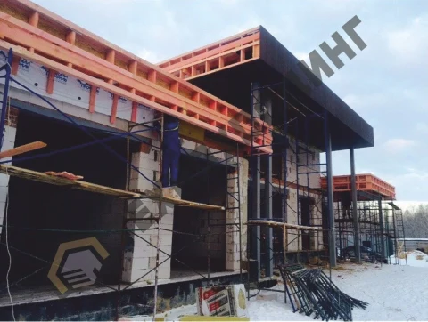
-
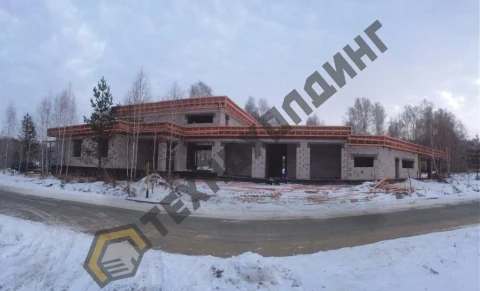
-
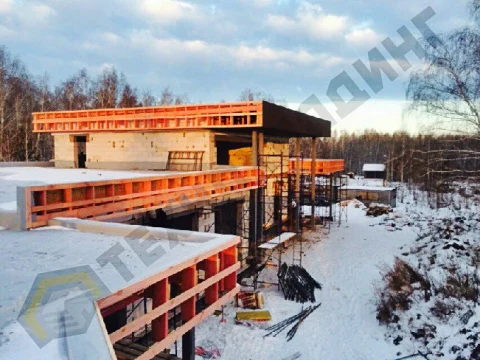
-
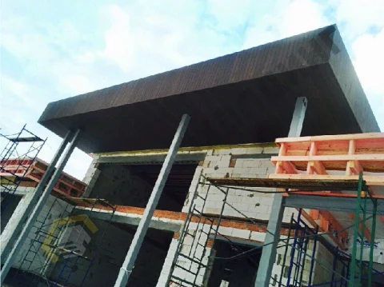
-
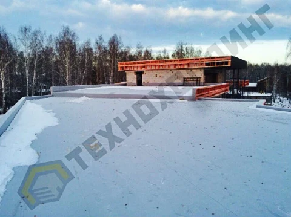
-
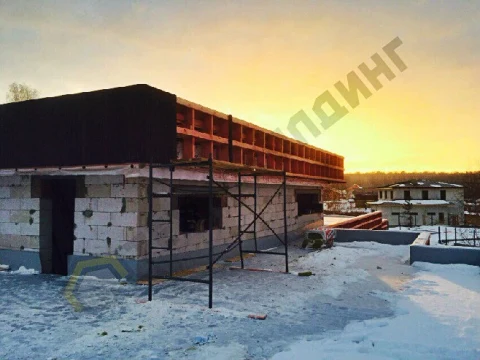
-
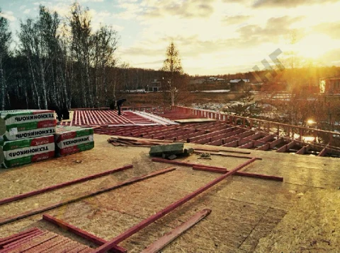
-
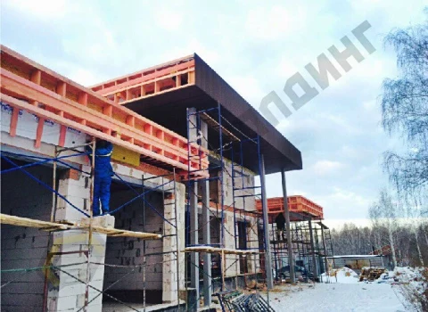
-
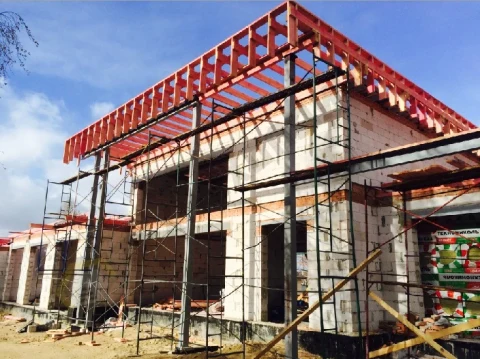
-
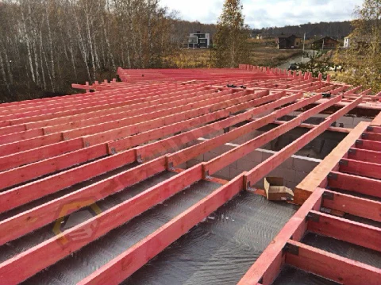
-
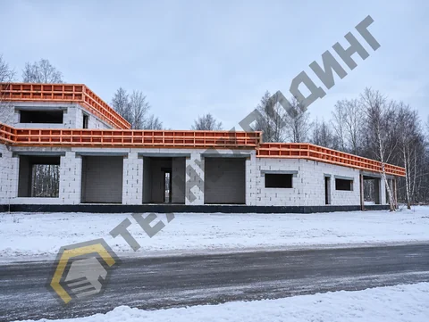
-
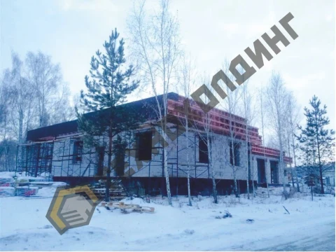
-
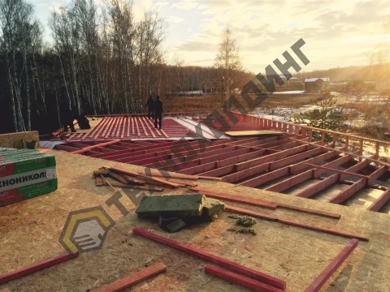


Фото 1 из 14